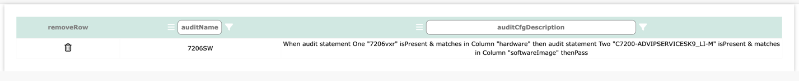
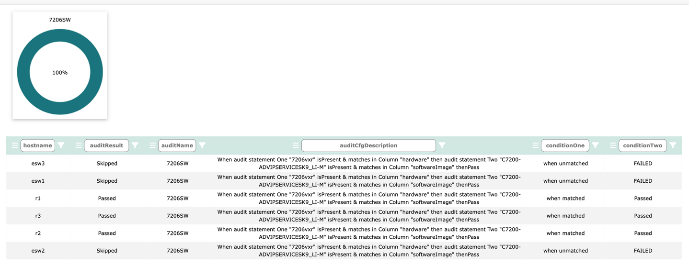

Log into Network Vista, open the menu , select a database, then click
The Table Audit feature allows users to create custom audit tests that run against the table. These tests can be used to validate data and state. To create a table audit, click
Since each audit template assesses all table rows, you may need to create a test that focuses on a specific set of devices.
For example, when writing a test to confirm that all 7206 devices are using a specific IOS version, using an If statement would result in a match but could fail when encountering other platform types.
To reduce false positives, consider using the When/Then option. If all values must be present, use the If statement.

Click Save

To start the audit, click
TechTip: Audit process runs each time Network Vista runs a collection
Click to view the results

In the results, we see three skips and three matches. When the platform is 7206vxr then we expect software image to be C7200-ADVIPSERVICESK9_LI-M. As the platform was not a 7206vxr, condition one did not match so condition two was skipped. Skipped results are excluded are the final audit assessment score.